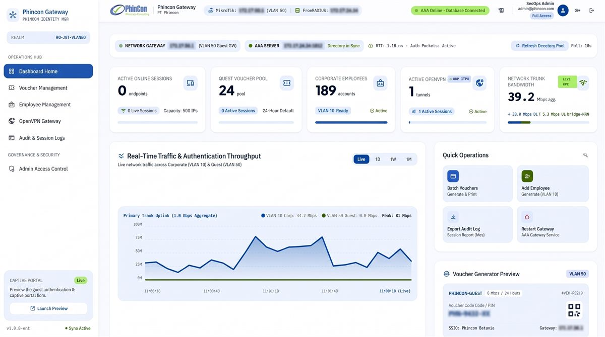

INFRASTRUCTURE // HIGH DENSITY
MikroTik RB1100AHx4
Ubiquiti UniFi AP
FreeRADIUS
Captive Portal
Enterprise Wi-Fi & Multi-SSID Auth System
Centralized WPA2-Enterprise authentication with an in-house FreeRADIUS server (PostgreSQL-integrated), VLAN traffic segregation, a custom captive portal, and Netwatch automatic failover for 12+ UniFi APs.
UniFi AP Mesh→
FreeRADIUS AAA→
MikroTik RB1100AHx4→
Netwatch Failover
Auto Failover